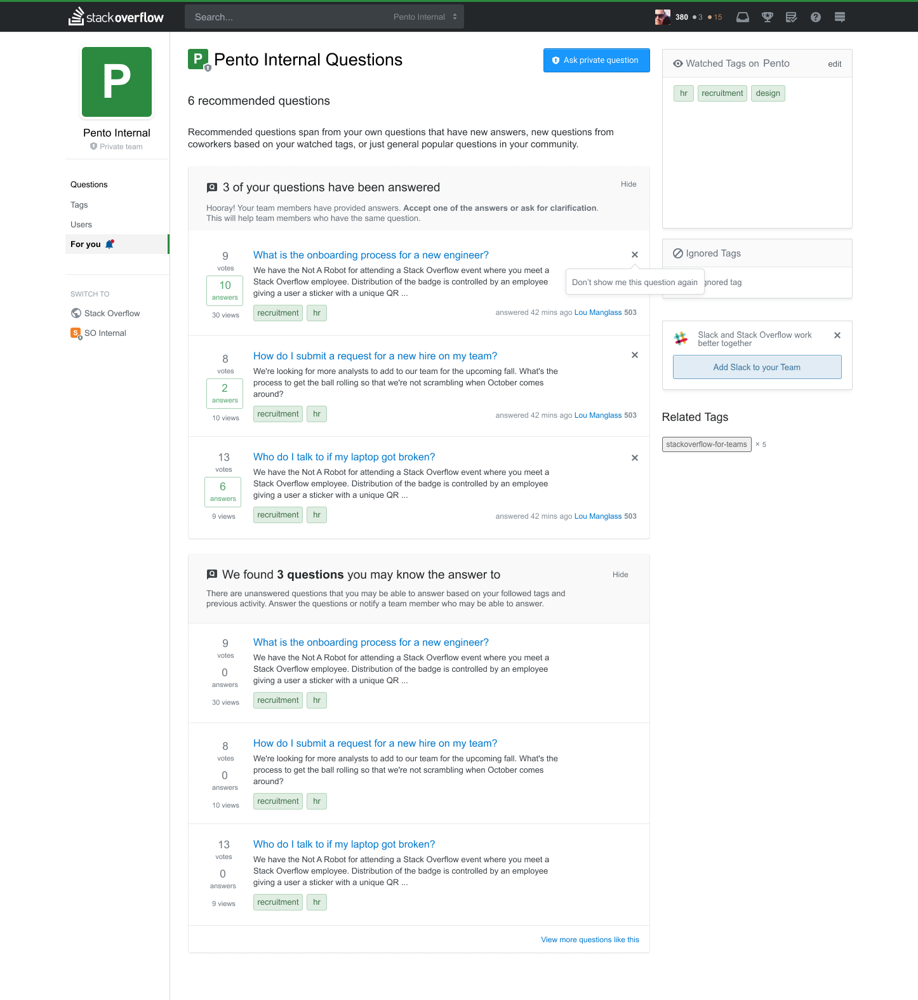
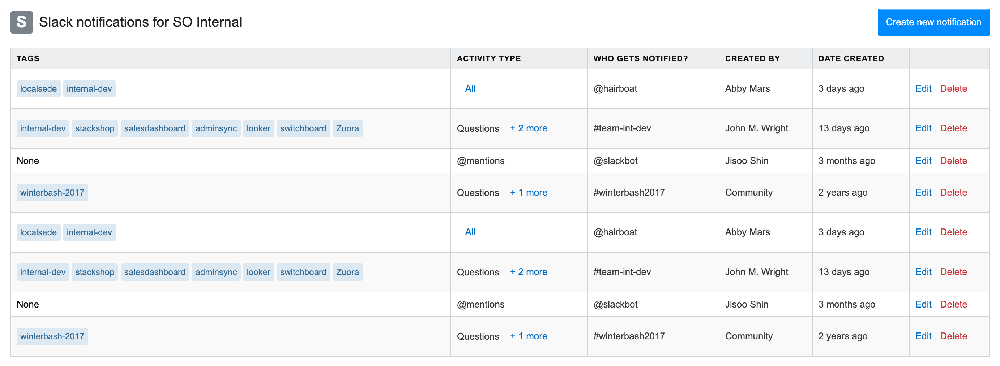
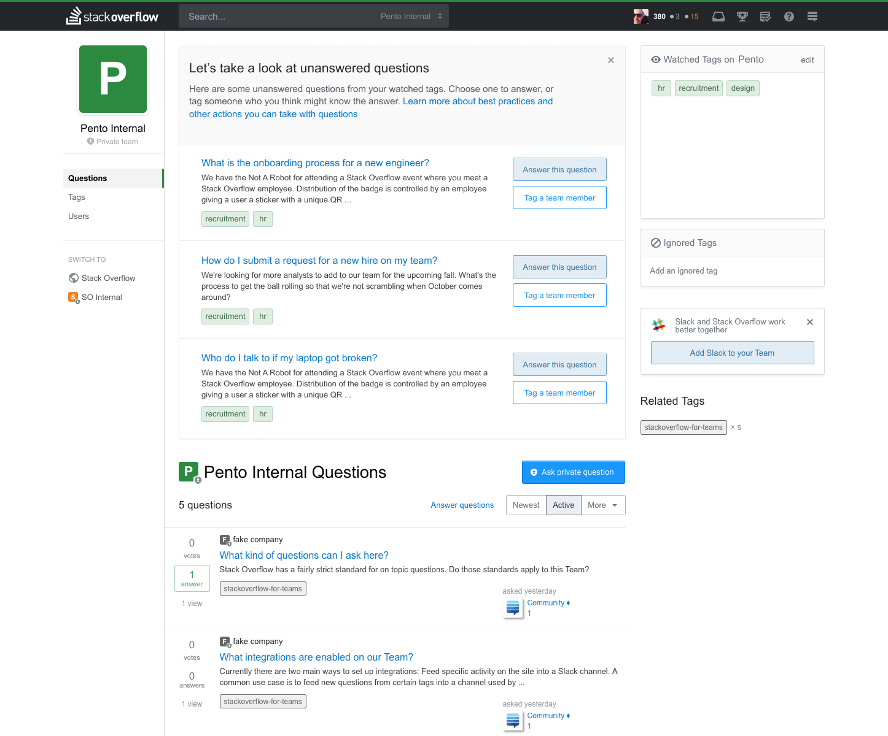

I design Stack Overflow’s SaaS product, Stack Overflow for Teams. I work closely with product managers, full stack engineers, and product marketing teams to consistently deliver features for our users. I am a design generalist: I provide input on specs, conduct discovery research, create mock-ups, assist in user interviews, and review PRs after the build is complete. Key features I’ve worked on include documentation, new creation and onboarding flow, and weekly activity newsletters.

As companies continue to use our product, there will be an increasing volume of unanswered questions within Teams. In order to keep the product scalable as the volume of questions grow, we needed a better way to surface unanswered questions.
Rather than showing users a list of all unanswered questions and requiring them to apply filters to their needs, what if we could group together questions and related actions for each user for a tailored experience? By creating a new "For You" tab, we'd be able to show users questions that require their attention. Addressing all recommended questions in this list can also give users a satisfying sense of inbox zero.

As SO for Teams continues to add more integrations, our notification settings table needed an update. Individual users can create their own custom settings for the integration, but anyone in the company can view the entirety of the notifications. I cleaned up the columns of the table, and cut down information that wasn't essential. Tags were also displayed in their native form, rather than text.
I was able to easily code this using our design system, Stacks, created by Aaron Shekey. View my codepen here!
An important part of making sure our users are engaged with our product is by ensuring that onboarding is done properly. After the initial release of our Teams product, we found that users were mostly ignoring our onboarding checklist that appeared on the right rail of the page.

As part of my first project at Stack Overflow, I explored how we could implement inline onboarding. Rather than putting onboarding as a side widget, it would be more front and center on the page. It would also be a more tailored experience, requiring the user to complete the steps in sequential order, rather than a do-it-in-your-own-time checklist. Upon joining the team, a new user will be prompted with unanswered questions that they can answer.
Our team is currently expanding on this feature, by adding in more just-in-time onboarding that will show up after essential onboarding tasks are completed.